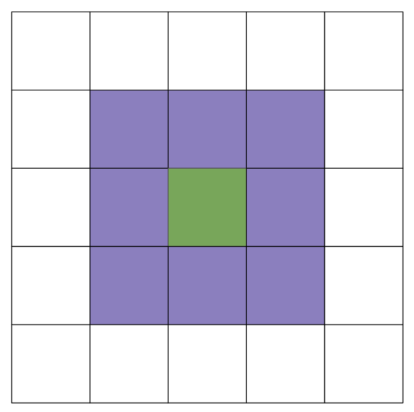

实验09：生命游戏
常见问题
每个作业顶部都会链接一个常见问题。你也可以通过在 URL 末尾添加"/faq"来访问它。实验09的常见问题位于 这里 。
简介
本实验将帮助你完成项目 3：构建你自己的世界（BYOW）。第一部分将教你如何使用一组"瓷砖"在屏幕上生成形状。这将适用于在项目 3 中构建房间、走廊和你世界的其他特征。下周的实验将更多地涉及实现交互性，这与构建项目 3 的一部分相关（但更多内容将在下一个实验中介绍）。
实验前准备
在开始本实验之前需要完成的一些步骤：
-
像往常一样，运行
git pull skeleton main - 观看上学期项目 3 的入门视频， 点击此链接 。
- 名称和 API 可能略有变化，但总体思路仍然适用。
- 要明白项目 3 将是一场马拉松，而不是短跑。不要等到最后一刻。 你和你的搭档现在就应该开始思考你的设计。
- 通读第 1 阶段/浏览 项目 3 规范 并理解主要思想。
在本实验的前半部分，你将学习一些对项目 3 有帮助的基本技术和工具。
第一部分：认识瓷砖渲染引擎
无聊世界
打开框架代码并查看
BoringWorldDemo
文件。尝试运行它，你应该会看到一个如下所示的窗口出现：

这个世界由空白空间组成，除了底部中间附近的矩形块。生成这个世界的代码包括三个主要部分：
- 初始化瓷砖渲染引擎。
-
生成一个二维
TETile[][]数组。 -
使用瓷砖渲染引擎显示
TETile[][]数组。
通读代码，了解瓷砖渲染 API 如何工作的示例。创建
TERenderer
对象后，你需要调用
initialize
方法，指定你世界的宽度和高度，其中宽度和高度以瓷砖数量给出。每个瓷砖是 16 像素 × 16 像素，所以例如，如果我们调用
ter.initialize(10, 20)
，我们最终会得到一个 10 瓷砖宽、20 瓷砖高的世界，或者等效地说，160 像素宽和 320 像素高。
代码还演示了如何使用
TETile
对象。你可以使用
TETile
构造函数从头构建它们（参见
TETile.java
），或者你可以从
Tileset.java
文件中的预生成瓷砖调色板中选择。例如，下面
BoringWorldDemo.java
中的代码生成一个二维瓷砖数组，并用
Tileset.NOTHING
给出的预生成瓷砖填充它们。
TETile[][] world = new TETile[WIDTH][HEIGHT];
for (int x = 0; x < WIDTH; x++) {
for (int y = 0; y < HEIGHT; y++) {
world[x][y] = Tileset.NOTHING;
}
}
当然，我们可以覆盖现有的瓷砖。例如，下面
BoringWorld.java
中的代码创建了一个 15 × 5 的瓷砖区域，由预生成的瓷砖
Tileset.WALL
组成，并将其写在上面循环代码创建的一些
NOTHING
瓷砖之上。
for (int x = 20; x < 35; x++) {
for (int y = 5; y < 10; y++) {
world[x][y] = Tileset.WALL;
}
}
$(0, 0)$ 是世界的左下角（不像你可能习惯的那样是左上角）。例如，对于位置 (5, 4)，我们会向右走 5 个单位，然后向上走 4 个单位。我们将在实验中使用这种方向。
渲染的最后一步是调用
ter.renderFrame(world)
，其中
ter
是一个
TERenderer
对象。对瓷砖数组所做的更改不会出现在屏幕上，直到你调用
renderFrame
方法。
尝试将指定的瓷砖更改为
Tileset
类中除
WALL
之外的其他内容，看看会发生什么（比如
Tileset.GRASS
或
Tileset.WATER
）。另外，尝试改变循环中的常量，看看世界如何变化。
瓷砖本身是不可变的！你不能做像
world[x][y].character = 'X'
这样的事情。
查看
TETile
来帮助理解！
为什么我们要将世界初始化为
Tileset.NOTHING
，而不是让它保持不变？原因是
renderFrame
方法不会绘制任何
null
的瓷砖。如果你不将世界初始化为
Tileset.NOTHING
，当你尝试调用
renderFrame
时会得到一个
NullPointerException
。
随机世界
现在打开
RandomWorldDemo.java
。尝试运行它，你应该会看到类似这样的东西：

这个世界完全是一片混乱——到处都是墙和花！如果你查看
RandomWorldDemo.java
文件，你会发现我们在做一些新的事情：
-
我们创建并使用一个类型为
Random的对象，它是一个" 伪随机数生成器 "。 -
我们使用一种称为
switch语句的新条件类型。 -
我们将工作委托给函数，而不是在
main中做所有事情。
随机数生成器正如其名，它产生无限的数字流，这些数字看起来是随机排列的。
Random
类为我们提供了在 Java 中生成
伪随机
数的能力。例如，以下代码生成并打印 3 个随机整数：
Random r = new Random(1000);
System.out.println(r.nextInt());
System.out.println(r.nextInt());
System.out.println(r.nextInt());
我们称
Random
为
伪随机
数生成器，因为它不是真正随机的。在底层，它使用很酷的数学来获取之前生成的数字并计算下一个数字。我们不会深入研究这门数学的细节，但如果你好奇，可以查看
维基百科
。
更重要的是，生成的序列是确定性的，我们获得不同序列的方式是通过选择所谓的"种子"。
这种伪随机性将是项目 3 的核心部分。
在上面的代码片段中，种子是
Random
构造函数的输入，所以在这种情况下是
1000
。控制种子非常有用，因为它允许我们间接地控制随机数生成器的输出。
如果我们向构造函数提供相同的种子，我们将获得相同的序列值。
例如，下面的代码打印 4 个随机数，然后再次打印相同的 4 个随机数。由于种子与之前的代码片段不同，这 4 个数字可能与上面打印的 3 个数字不同。这在项目 3 中
将非常有帮助
，因为它将给我们确定性的随机性：你的世界看起来完全随机，但你可以为了调试（和评分）目的一致地重新创建它们。
Random r = new Random(82731);
System.out.println(r.nextInt());
System.out.println(r.nextInt());
System.out.println(r.nextInt());
System.out.println(r.nextInt());
r = new Random(82731);
System.out.println(r.nextInt());
System.out.println(r.nextInt());
System.out.println(r.nextInt());
System.out.println(r.nextInt());
如果用户/程序员没有提供种子，即
Random r = new Random()
，随机数生成器会使用一些频繁变化并产生大量唯一值的值来选择种子，例如当前时间和日期。种子可以通过各种其他更奇怪的方式生成，例如
使用一整面的熔岩灯
。
目前，
RandomWorldDemo
使用一个硬编码的种子，即
2873123
，所以它总是生成完全相同的随机世界。如果你想看到其他随机世界，可以更改种子，不过考虑到世界有多混乱，可能不会很有趣。
最后也是最重要的一点是，与其在
main
中做所有事情，
我们的代码将工作委托给具有明确定义行为的函数
。这对你的项目 3 体验至关重要！你需要不断识别可以用明确定义的方法解决的小任务。此外，你的方法应该形成一个抽象层次结构！
在这一点上，请确保你已经通读并理解了
BoringWorldDemo
和
RandomWorldDemo
（很重要！），并且你大致了解如何使用
TERenderer
、
TETile
和
Tileset
。接下来的部分将期望你对前两个演示类的工作方式以及如何使用瓷砖渲染类有一个大致的了解。
第二部分：康威生命游戏
简介
康威生命游戏（简称生命游戏）是由数学家约翰·霍顿·康威创建的细胞自动机。细胞自动机是一种与自动机理论（即抽象机器和自动机/自运行机器的研究）相关的计算模型。我们并不真的需要知道自动机理论或细胞自动机到底是什么，但生命游戏是用来展示细胞如何随时间变化的一个例子。这是一个零玩家游戏，世界以无限的二维细胞网格存在。每个细胞要么活着要么死亡，每个细胞的状态在每个时间步都会变化，这取决于它的 8 个邻居的状态（我们稍后会详细介绍规则）。游戏的一个示例如下面所示：

游戏中的后代取决于初始状态。初始状态实际上将充当未来状态的"种子"。在本实验中，初始状态可以用随机种子生成，也可以以文件的形式提供。
如果你想看看游戏是什么样的，你可以在 这里 玩它的在线版本，并在 这里 观看一个很酷的例子。
实现
在我们开始之前，请花点时间浏览
GameOfLife
文件。在开始使用之前，熟悉当前代码非常重要（特别是提供给你的变量）。
在你开始之前，还有几点提醒和提示：
- 在本实验中，我们实现了康威生命游戏的一个稍微修改的版本，这样我们将世界边界之外的区域视为死细胞，而不是无限的。
-
你可以假设板上的每个瓷砖总是
Tileset.NOTHING或Tileset.CELL。 - 提醒一下，(0, 0) 是板的左下角。
-
我们在每个方法上方都提供了注释，以及以
TODO注释的形式为你将要实现的方法提供了注释。
确保你已经通读了上面的提示和提醒！我们将假设你在接下来的部分中理解它们。
构造函数
这个类中有多个构造函数。你不需要（也不应该）修改它们。一些构造函数接受一个名为
boolean test
的额外参数——这些构造函数主要用于
不渲染的
测试（因为自动评分器无法渲染/显示任何东西）。如果你想查看游戏的视觉输出，请查看这个
部分
。或者如果你在本地编写自己的测试，你也可以使用没有那个额外参数的构造函数来进行可视化渲染和测试。
让我们转到我们将要实现的方法。
nextGeneration
正如我们之前提到的，康威生命游戏的世界是一个二维的细胞网格，每个细胞要么死亡要么活着。这些细胞的状态将根据它们的 8 个邻居（垂直、水平、对角线）的状态而变化。下面显示了一个例子，其中绿色细胞是我们当前的细胞，紫色细胞是它的邻居：

当你检查一个细胞的状态将如何改变时，你只需要关注它如上所示的直接 8 个邻居。
在每个时间步，细胞的状态将根据以下规则改变：
- 任何活细胞如果有少于两个活邻居就会死亡，就像由于人口不足一样。
- 任何有两个或三个邻居的活细胞都会存活到下一代。
- 任何有超过三个邻居的活细胞都会死亡，就像由于人口过剩一样。
- 任何有恰好三个活邻居的死细胞都会变成活细胞，就像通过繁殖一样。
在
nextGeneration
中，我们想要根据上面提供的规则"更新"我们板的状态。板的当前状态由
TETiles[][] tiles
表示。提供的
TETile[][] newGen
表示下一个状态，并且
最初填充了
Tileset.NOTHING
。我们想要获取板的当前状态，将下一代/状态存储在
newGen
中并返回它。
根据上述规则实现方法
nextGeneration
。
持久性
在我们讨论你需要实现的另外两个方法之前，让我们先谈谈项目 3。在项目 3 中，你必须实现保存和加载游戏状态的功能。本实验这部分的目标是帮助你熟悉持久性的概念。什么是持久性？
每当运行 Java 程序时，我们使用变量来跟踪我们的值。但是一旦程序结束，这些值"就不存在了"或者它们不再可访问。例如，如果我们在程序中声明一个像
int x = 50
这样的变量，它只会存在于程序内部——有了持久性，我们希望这个值在程序结束后继续存在。为了继续访问这些值，我们希望确保程序的状态持续存在。这称为持久性。
在实验的这一部分，我们提供了一个类
FileUtils
，来帮助你将信息保存和加载到文件中。
请在你的实现中使用提供的类，并在继续之前通读这个类。
saveBoard
如果你导航到
patterns
，你会看到几个包含不同模式的文本文件。这些特定模式代表了我们可以传递的几个初始状态，它们以特定格式保存，我们希望在
saveBoard
中复制这种格式。让我们以其中一个（
glidergun.txt
）为例来讲解：
50 50
00000000000000000000000000000000000000000000000000
00000000000000000000000000000000000000000000000000
00000000000000000000000000000000000000000000000000
00000000000000000000000000000000000000000000000000
00000000000000000000000000000000000000000001100000
// The rest 是 hidden away
你看到的前两个数字分别是板的宽度和高度，并且
用一个空格分隔。
文本文件中的下几行代表我们的板（在上面的例子中，我们把大部分都隐藏了，因为它变得很长）。在代码中，板的每个位置要么是
Tileset.NOTHING
，要么是
Tileset.CELL
。当我们保存到文本文件中时，我们将保存为
0 代表
NOTHING
，1 代表
CELL
。
这是一个相对较大的文件，所以让我们从提供的测试中看一个较小的例子。如果你有给定的瓷砖，
TETile[][] result = new TETile[][] {
{Tileset.NOTHING, Tileset.CELL, Tileset.NOTHING},
{Tileset.NOTHING, Tileset.CELL, Tileset.CELL},
{Tileset.CELL, Tileset.NOTHING, Tileset.NOTHING},
{Tileset.NOTHING, Tileset.CELL, Tileset.NOTHING}
};
它将保存在文本文件中，如下所示
3 4
010
011
100
010
需要注意的一件重要事情是，我们改变了板的方向，以便左下角是 (0, 0)。最初，
result
二维数组会被读取为 (0, 0) 在左上角，但我们会处理这种差异（通过转置和翻转）。
你不需要担心这是如何工作的，因为我们已经为你处理了这个变化，但只要知道你应该在左下角是 (0, 0) 的假设下工作。
重复一下，你不需要在实验的任何部分中转置或翻转任何板。
还有三个额外要求：
- 确保文本文件中的方向与板的方向相同。板的右上角应与保存在文本文件中的右上角匹配，如上面的示例所示。想想为什么这很重要。如果 (0, 0) 代表我们板的左下角，但我们从上到下写，可能会发生什么？
-
对于你写入文本文件的每一行，确保附加
\n。这适用于写在文本文件顶部的尺寸，尽管这个方法的框架代码已经为你提供了。这是为了确保文本文件中的板表示是准确的；它在下一个方法loadBoard中也会很有用。 -
你保存到的文本文件的名称必须叫做
src/save.txt。我们已经把它作为变量提供了，所以不要删除它。
在框架代码中，我们提供了
TODO
注释。你可以通过实例变量
currentState
访问板的当前状态。
实现方法
saveBoard
。
loadBoard
现在，我们想要从给定文件加载，而不是保存。加载时，你可以假设格式与上一部分
saveBoard
中提到的相同。也就是说，第一行是尺寸，其余行是板。我们想要将这些信息加载到一个
TETile[][]
中并返回它。
根据
saveBoard
中提到的要求，你可以假设每一行都用"\n"分隔，并且板的方向是正确的，也就是说将左下角视为 (0, 0)（请记住，如果你的
saveBoard
不遵循提到的确切格式，可能会影响你的
loadBoard
）。在这一部分，你可能会发现
String
类的
split
和
charAt
函数很有用。
实现方法
loadBoard
。
由于我们正在加载游戏，请确保初始化实例变量
width
和
height
。
测试和运行游戏
我们提供了一些本地测试来帮助你检查你的实现。通过所有测试 并不能保证在自动评分器上获得满分。
我们在
patterns
中为你提供了一些文件，这些文件代表了一些你可以传入的初始状态。
请不要修改它们。
它们不应该被修改，因为本地测试会使用它们，并且测试期望它们保持原样——如果文件被编辑，本地测试将检查是否被修改，测试将不会运行。一些测试文本文件也是提供的——与
patterns
中的文件一样，请不要修改它们。
运行 the game, you can run it through the main method at the bottom of
GameOfLife.java
.
If an initial state 是 not provided (a text file), it will generate a random 一
through a random seed.
如果你想用提供的初始状态之一来运行游戏（或者创建你自己的！），请导航到 Run –> 编辑 Configurations。转到 Applications –> GameOfLife。如果它不在那里，请点击左上角的
+
并选择 Applications。对于
Main class
，输入
GameOfLife
并点击出现的选项。对于你的程序参数，你需要指定文件路径以及添加
-l
标志。例如，如果你想使用
hammerhead.txt
作为初始状态，你需要输入以下程序参数：
-l patterns/hammerhead.txt
然后，继续运行应用程序。
如果你在编写自己的测试用例，请确保使用
方阵
，特别是如果你正在使用
nextGeneration
方法。提供的本地测试和自动评分器上的测试仍将按预期运行，但为
nextGeneration
编写的本地测试仍应在 n × n 的棋盘上完成。
项目3保存和加载
完成
saveBoard
和
loadBoard
后，注意我们最终将整个棋盘保存到了文件中（即每个
Tileset
，我们用
0
和
1
来表示它们）以及棋盘的高度和宽度。你认为这将是项目3中最好的方法吗？
必须遍历整个棋盘并将其保存到文本文件中似乎有点复杂——对于运行时来说可能不是最优的，而且对于项目3来说可能也不必要！考虑一下保存和加载的目标是什么。我们想要确保能够加载回我们保存的世界，即使程序结束后它仍以某种形式继续存在。从用户的角度来看，他们不需要知道这是如何工作的（例如，他们是否能够在保存的文本文件中看到整个棋盘表示其实并不重要）。因此，与其试图将整个世界保存到文本文件中，不如更多地关注 我们如何用特定信息重新创建这个世界 ，这样从用户的角度来看，他们保存的世界似乎以他们离开时的确切状态被加载回来了。
你现在’t need to exactly know how you should save and load in 项目 3 as of now, but
it would be a good time to start thinking about the design of it. It’s important to know
that you’ll be relying on some kind of pseudorandom generator - while random,
there 是 an aspect of determinism to it if a seed 是 given to the generator.
To reiterate a point from earlier about
Random
and pseudorandom
generators: “Th是
will be super helpful
in 项目 3, as it will give
us deterministic randomness: your worlds look totally random,
but you can recreate them consistently for debugging (and grading) purposes.”
提交
总而言之，你需要实现三个方法：
-
nextGeneration -
saveBoard -
loadBoard
提交之前，请确保你已通过所有提供的本地测试。 自动评分器将测试你的加载和保存功能。
你在 Gradescope 上获得的分数即为你的最终分数。